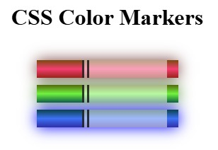
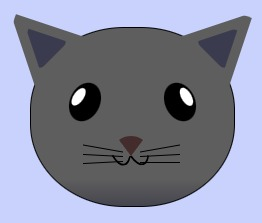
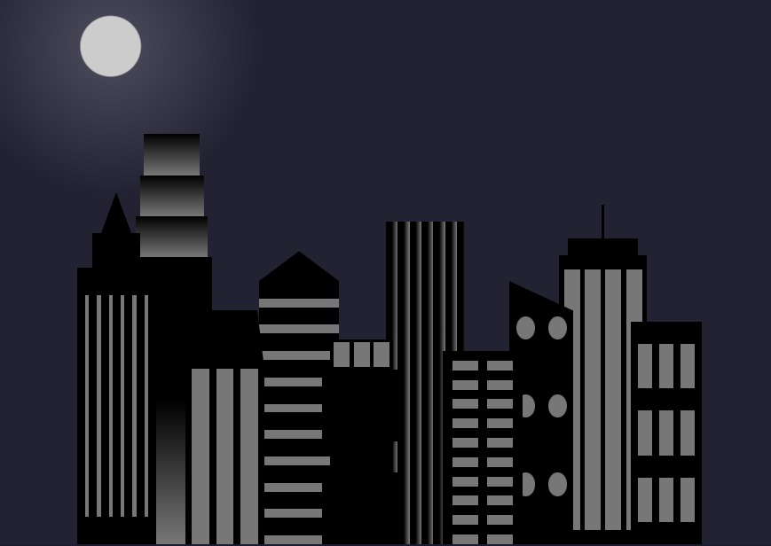

¿Quien soy?
Para mí, programar no es solo escribir código, es el arte de transformar ideas abstractas en soluciones funcionales. la programación como un puente entre la imaginación y la funcionalidad. No busco solo que el código sea eficiente, sino que la arquitectura sea limpia y la experiencia del usuario sea intuitiva. En el desarrollo web, he encontrado el equilibrio perfecto: el rigor de la lógica para resolver problemas complejos y la libertad de la tecnología para diseñar el futuro, un commit a la vez.
Leer más"No aprendes a programar leyendo sobre ello. Lo aprendes programando. No te detengas cuando el codigo no compile; detente cuando estes orgulloso de lo que has construido . El camino del aprendizaje es infinto, pero cada linea de codigo te acerca mas a la meta;El futuro no se escribe con tinta, se escribe con logica,con pasion y con la voluntad inquebrantable de seguir aprendiendo. La programacion no es simplemente el acto de escribir lineas de codigo en un editor de texto; es el superpoder de convertir el pensamiento logico en realidad tangible. "
- Yurley Gomez
Mis proyectos

Proyecto 1
"Este proyecto es una inmersión profunda en la teoría del color aplicada al diseño web. A través de la manipulación experta de CSS, se han desarrollado marcadores visuales que no solo exhiben una armonía de tonalidades, sino que también aprovechan el poder de los gradientes para crear transiciones de color suaves y fluidas. La adición de sombras sutiles aporta profundidad y dimensión, haciendo que cada elemento destaque con un impacto visual calculado. ."
Ver proyecto
Proyecto 2
"En este proyecto, se demuestra la versatilidad de CSS para la creación artística. Una ilustración detallada de un felino ha sido construida enteramente utilizando selectores de CSS y elementos div. Cada rasgo distintivo del gato, desde la curva de sus orejas hasta la delicadeza de sus bigotes, ha sido meticulosamente diseñado mediante el uso estratégico de propiedades como border, border-radius y la composición de figuras geométricas básicas con posicionamiento"
Ver proyecto
Proyecto 3
"Este proyecto presenta una ciudad completa, edificada exclusivamente con CSS. Se pone de manifiesto el potencial de los elementos div , combinados con una paleta de colores cuidadosamente seleccionada, gradientes dinámicos y el uso de sombras para simular la iluminación y el volumen de los edificios.Además, el diseño demuestra cómo, mediante el uso creativo de estilos , es posible representar estructuras sin necesidad de imágenes externas ." .
Ver proyecto
Proyecto 4
"Este proyecto es un testimonio de la capacidad de CSS para la representación gráfica precisa. Un piano, con sus teclas blancas y negras distintivas, ha sido dibujado utilizando únicamente elementos div, colores, sombras y la propiedad border-radius. Además, el diseño demuestra cómo es posible crear formas y detalles visuales complejos sin utilizar imágenes, aprovechando las propiedades de estilo para dar forma, profundidad y realismo a cada elemento.usando box-shadow y flexbox ."
Ver proyecto